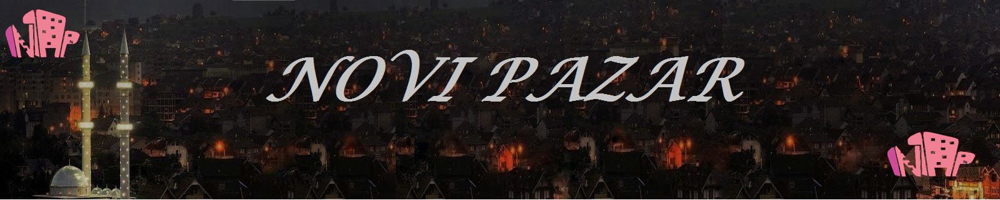
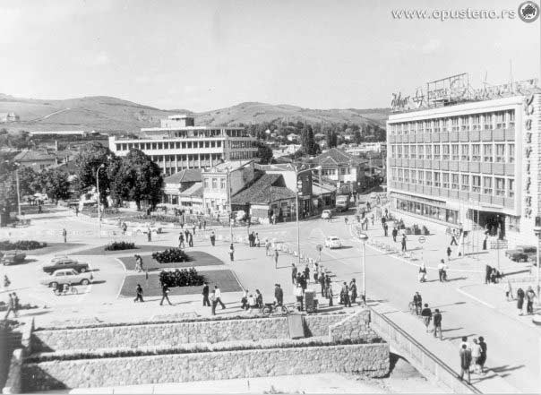

|  |
|---|
|  | Početkom VII veka Balkansko poluostrvo su naselili Sloveni. Jedna od najgušće naseljenih teritorija bila je dolina Raške. Novi Pazar je prvobitno bio zamišljen kao baza za dalje prodore Turaka na sever. Između 1459. i 1461. udareni su temelje gradu na ušću Jošanice i Raške i dali mu ime Yeni Bazar,odnosno Novi Pazar. Njegov osnivač bio je turski vojskovođa, Isa-beg Isaković. Preko njega su prolazili važni putevi koji su povezivali Dubrovnik, Bosnu i južno primorje sa Solunom i Carigradom(danasnji Istanbul).U sredini se nalazila čaršija sa dućanima zanatlija i trgovaca. Oko čaršije bile su mnogobrojne mahale u kojima se stanovalo, a u svakoj mahali postojala je i džamija. Najveći broj mahala u gradu dobio je po graditeljima i obnoviteljima džamija. Tako se pominju: Mujezin hodžina mahala, I skender Čelebijina mahala i druge... |
|---|---|
Novi Pazar ima burnu i bogatu prošlost. Posebnu vrijednost ovog multietničkog i multikulturalnog prosora , gdje se susreću zapadna i istočna civilizacija, čine mnogobrojni kulturno-istorijski spomenici.Medju najvažnije kulturno-istorijske spomenike spadaju:Petrova crkva, sagradjena u X vijeku; Đurđevi stupovi, zadužbina Stefana Nemanje, iz XII vijeka manastir Sopoćani čiji je osnivač kralj Uroš I. Gradska tvrđava sa Kulom motriljom iz XV vijeka izgrađena po nalogu osnivača grada Isa-bega Isakovića; Altun alem džamija iz XVI vijeka jedna je od najpoznatijih otomanskih duhovnih zdanja građena zajedno sa vjerskom školom.Izgradio ju je čuveni graditelj Muslihudin Abdulgani; Amir-agin han iz XVII vijeka; Hamam (kupatilo) iz XV vijeka je poklon osnivača grada Isa-bega Isakovića. |
|